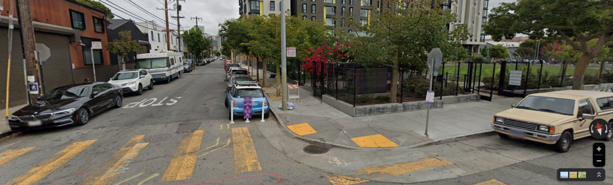

Exploring Prostitution
San Francisco, with its rich history and vibrant culture, stands as a beacon of diversity and innovation. In recent years, the city has experienced a noteworthy shift—a significant decrease in incidents related to prostitution. This trend, as illustrated by a bar chart spanning from 2003 to 2018, showcases a consistent decline in such occurrences.
Yet, the significance of this analysis extends beyond mere observation of numerical trends; it delves into the intricate factors contributing to this decline. From the bustling streets of its eclectic neighborhoods to the iconic landmarks that shape its skyline, San Francisco has grappled with the presence of prostitution for decades. However, the recent decrease prompts a deeper exploration into the underlying causes driving this notable shift.
Unveiling Trends in San Francisco's Underground Trade: Exploring the Decline and Dynamics of Prostitution
Analyzing Neighborhood-Specific Shifts, Solutions, and Surprising Statistics Behind the Reduction of Street Solicitation
Graph offers a visual of the trend. A peak in prostitution
incidents around the mid-2000s followed by a clear drop in the following years.
This pattern provides a foundation to examine the social and geographical
changes that may have influenced these figures.
In examining the social and geographical parameters, data has supported a detailed analysis of the trends in the city's prostitution occurrences. We believe internet access has had an influece on the recordings. The release of the iPhone 3G in 2008 - one of the first smartphones, offering access to platforms, which likely influenced the decline in recorded prostitution incidents in San Francisco starting that year (2008), as seen in Graph 1. This suggests a shift from street-based activities to online platforms.
In 2017, a new hotspot appeared in downtown San Francisco at Onion Square. This area, known for its numerous hotels and bars, highlights the relation between online platforms and geographical influences on the city's social dynamics. The concentration of nightlife, hotels, and venues likely complements the digital shift which is illustrating the factors contributing to urban trends. Drag the bar and see how hot spot areas are changing throughout the years.
Slide the Slider to view data in map
A key location in
San Francisco, underwent significant changes around 2009.
Observations from Google Maps revealed that the area was under construction at the time,
transforming from an isolated, industrial zone into a family-friendly
residential neighborhood with a park and coffee shops.
This urban change likely contributed to the reduction in recorded incidents.
In 2017 the same spot only had 1 incident,
where in 2009 it had 164.
This location can be found on the below map at the ‘In Chan Kaajal Park’ on 17th street.
2009:
Today:

Another factor is the rise in employment rates has changed with the evolving urban landscape of San Francisco. This suggests that as more residents find employment, the less is the sex industry applealing. This economic rise is reshaping the city's sociaty, potentially leading to a decline in the sex industry. Find the below employment rates:
https://fred.stlouisfed.org/series/LAUCN060750000000005
In conclusion, the decline in prostitution incidents in San Francisco reflects a complex interplay of various factors, from targeted interventions to broader societal shifts. By analyzing the trends and underlying dynamics behind this phenomenon, we gain valuable insights into the evolving landscape of urban life and the ongoing efforts to foster safer and more inclusive communities.